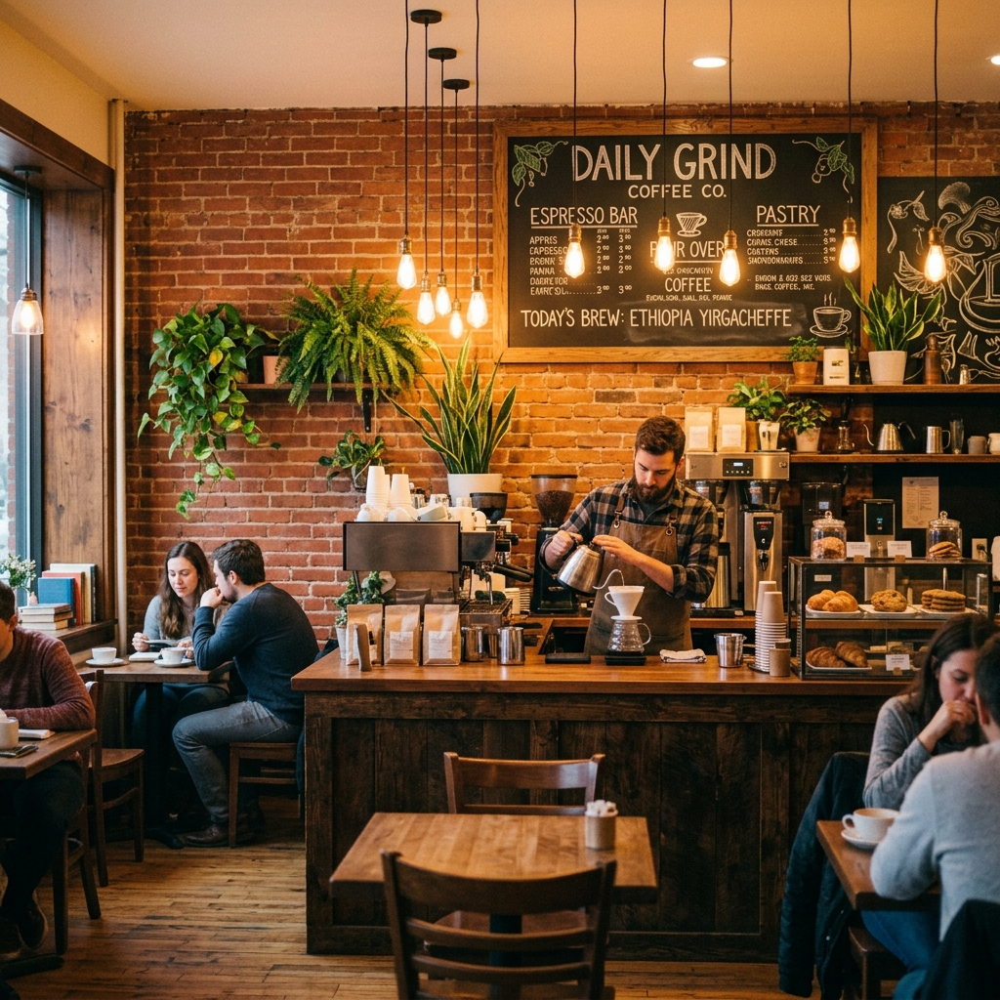

Tutku ile Demlendi,
Sevgi ile Sunuldu
Amber & Roast, 2018 yılında Ali Kajeviç'in yağmurlu bir öğleden sonra İstanbul'da kurduğu hayalinden doğdu. Altı masalı küçük bir köşe dükkanı olarak başlayan yer, şehrin en sevilen özel kahve mekanlarından birine dönüştü.
Kullandığımız her çekirdek tek kökenlidir ve Etiyopya, Kolombiya ve Guatemala'daki küçük çiftliklerden doğrudan etik yollarla temin edilir. Baristalarımız, her fincanın — ister sade bir Americano ister özenli bir pour-over olsun — küçük bir sanat eseri olmasını sağlamak için 200+ saatlik eğitim alır.
Kahvenin ötesinde, kafemizi bir topluluk alanı olarak görüyoruz.Yerel sanatçılara, açık mikrofon gecelerine ve mevsimlik etkinliklere ev sahipliği yaparak mekânımızı mahallenin kültürel buluşma noktasına dönüştürüyoruz.
- Etik kaynaklı, tek kökenli çekirdekler
- Ödüllü barista ekibi
- Topluluk öncelikli felsefe
- Sıfır atık & çevre dostu ambalaj